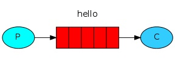
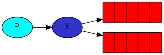
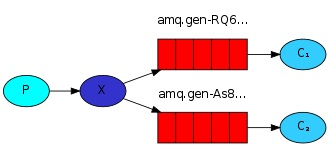
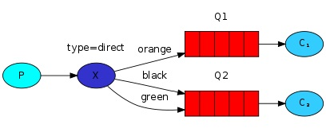
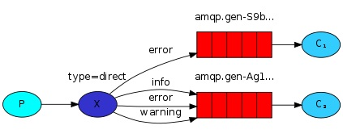

RabbitMQ入门学习笔记
RabbitMQ简介
RabbitMQ是个消息中间件。
- Producer：发送消息的程序称为生产者
- Queue：消息在RabbitMQ中存储在队列，队列上限由内存和磁盘决定。队列本质上讲就是一个大的消息缓冲区，多个生产者可以发消息到同一个队列，多个消费者可以从同一个队列获取消息。
- Consumer：等待接受消息的程序称为消费者
本文目标：
- 了解RabbitMQ基础模型
- 了解RabbitMQ不同的Exchange类型
Hello World
官方教程使用Pika作为RabbitMQ的Python客户端。
 send.py:
import pika
# 连接本地RabbitMQ
connection = pika.BlockingConnection(
pika.ConnectionParameters(host='localhost'))
channel = connection.channel()
# 声明要将消息发送至的队列
channel.queue_declare(queue='hello')
# 指定exchanger, routing_key 发送消息
channel.basic_publish(exchange='', routing_key='hello', body='Hello World!')
print(" [x] Sent 'Hello World!'")
nnection.close()
receive.py
#!/usr/bin/env python
import pika
connection = pika.BlockingConnection(
pika.ConnectionParameters(host='localhost'))
channel = connection.channel()
# 同样声明队列
channel.queue_declare(queue='hello')
# 接收到消息时执行
def callback(ch, method, properties, body):
print(" [x] Received %r" % body)
channel.basic_consume(
queue='hello', on_message_callback=callback, auto_ack=True)
print(' [*] Waiting for messages. To exit press CTRL+C')
hannel.start_consuming()
任务队列
借助time.sleep()模拟单个consumer阻塞的情况，让消息分发给多个consumer。
消息分发
RabbitMQ默认采用round-robin的方式对消息进行分发，简而言之，就是消息会平均地分发到各个consumer上。
确认管理
之前的代码consumer对接受到的消息即时进行ACK，因此以但ACK后consumer在处理消息期间出问题，这条消息就永久丢失了。我们可以通过将message acknowledgement在处理完毕后才发送来避免这种情况。但是如果忘记ACK，相关消息就会一直停留在内存中，RabbitMQ不会释放没有ACK的消息。
消息持久化
为了让服务端的队列消息不丢失，需要声明队列durable=True。但是RabbitMQ不支持对已有的消息队列重新定义。
合理分配
通过声明channel.basic_qos(prefetch_count=1)，使得RabbitMQ知道某个worker一次不能处理多于1条消息，也就是说不要在没有收到前一条ACK的时候发送下一条任务。
task.py:
#!/usr/bin/env python
import pika
import sys
connection = pika.BlockingConnection(
pika.ConnectionParameters(host='localhost'))
channel = connection.channel()
channel.queue_declare(queue='task_queue', durable=True)
message = ' '.join(sys.argv[1:]) or "Hello World!"
channel.basic_publish(
exchange='',
routing_key='task_queue',
body=message,
properties=pika.BasicProperties(
delivery_mode=2, # make message persistent
))
print(" [x] Sent %r" % message)
nnection.close()
worker.py:
#!/usr/bin/env python
import pika
import time
connection = pika.BlockingConnection(
pika.ConnectionParameters(host='localhost'))
channel = connection.channel()
channel.queue_declare(queue='task_queue', durable=True)
print(' [*] Waiting for messages. To exit press CTRL+C')
def callback(ch, method, properties, body):
print(" [x] Received %r" % body)
time.sleep(body.count(b'.'))
print(" [x] Done")
ch.basic_ack(delivery_tag=method.delivery_tag)
channel.basic_qos(prefetch_count=1)
channel.basic_consume(queue='task_queue', on_message_callback=callback)
hannel.start_consuming()
发布订阅模式
publish/subscrribe模式：多个consumer获取到同一条消息。
官方实现了一套日志订阅系统，一个consumer负责将日志写至磁盘，另一个consumer负责将日志打印在屏幕上，需要用到发布订阅模式使得这些consumer获取到相同的消息。
Exchanges

前面几节介绍过P->Q->C的模型，实际上RabbitMQ中P发送的消息并不是直接到Q中的，而是发送到exchange中。exchange负责接收消息，推送消息至相应的Q，它必须清楚消息要推送到多个Q还是分配到多个Q，这些对应的规则在exchange type定义。
通常有几种exchange type：direct，topic，headers和fanout。
在本节要用上的是fanout类型。fanout顾名思义就是广播所有收到的消息到它所知道的队列中。
生产者在发送消息的时候需要声明发送到的exchange的名字和类型。
如果在声明queue的时候使用空字符串，RabbitMQ会选择一个随机的队列名称，比如amq.gen-JzTY20BRgKO-HjmUJj0wLg。
同时，在consumer中指定exclusive=True可以让consumer断开连接后队列被删除。
通过channel.queue_bind方法让consumer告知exchange对应的queue名字，称为binding（绑定）。
完成声明exchange，声明exchange类型，消费者生成随机的断开即删除的Queue，Queue和exchange绑定之后，exchange就可以把每次收到的消息推送到对应的Q中。
 emit_log.py:
#!/usr/bin/env python
import pika
import sys
connection = pika.BlockingConnection(
pika.ConnectionParameters(host='localhost'))
channel = connection.channel()
channel.exchange_declare(exchange='logs', exchange_type='fanout')
message = ' '.join(sys.argv[1:]) or "info: Hello World!"
channel.basic_publish(exchange='logs', routing_key='', body=message)
print(" [x] Sent %r" % message)
nnection.close()
receive_logs.py:
#!/usr/bin/env python
import pika
connection = pika.BlockingConnection(
pika.ConnectionParameters(host='localhost'))
channel = connection.channel()
channel.exchange_declare(exchange='logs', exchange_type='fanout')
result = channel.queue_declare(queue='', exclusive=True)
queue_name = result.method.queue
channel.queue_bind(exchange='logs', queue=queue_name)
print(' [*] Waiting for logs. To exit press CTRL+C')
def callback(ch, method, properties, body):
print(" [x] %r" % body)
channel.basic_consume(
queue=queue_name, on_message_callback=callback, auto_ack=True)
hannel.start_consuming()
路由（Routing）
和上一节略有不同，exchange还是会继续广播消息，但是要让consumer只订阅到特定消息，如重要的报错log。
上一节中我们通过binding将Q和E绑定，这次我们加上额外的参数routing_key：
hannel.queue_bind(exchange=exchange_name,
queue=queue_name,
ting_key='black')

对于fanout来说，这个参数是没有用的因为fanout就是直接将拿到的消息推到各个与exchange绑定了的Q上。
这次改用direct的exchange_type，消息会推到和binding_key和routing_key相同的队列上：
图里可以看到，exchangeX有两个queue绑定，其中Q1的rounting_key是orange，Q2是black和green。
P向X推送消息，X按照上一节需要把消息广播到Q1和Q2，但在现在的模型下，P告诉X消息的类型，比如black，X将消息推送至：
- Q1或者Q2
- routing_key是black的
因此Q2收到消息，Q1没有。
 emit_log_direct.py:
#!/usr/bin/env python
import pika
import sys
connection = pika.BlockingConnection(
pika.ConnectionParameters(host='localhost'))
channel = connection.channel()
channel.exchange_declare(exchange='direct_logs', exchange_type='direct')
severity = sys.argv[1] if len(sys.argv) > 1 else 'info'
message = ' '.join(sys.argv[2:]) or 'Hello World!'
channel.basic_publish(
exchange='direct_logs', routing_key=severity, body=message)
print(" [x] Sent %r:%r" % (severity, message))
nnection.close()
receive_logs_direct.py:
#!/usr/bin/env python
import pika
import sys
connection = pika.BlockingConnection(
pika.ConnectionParameters(host='localhost'))
channel = connection.channel()
channel.exchange_declare(exchange='direct_logs', exchange_type='direct')
result = channel.queue_declare(queue='', exclusive=True)
queue_name = result.method.queue
severities = sys.argv[1:]
if not severities:
sys.stderr.write("Usage: %s [info] [warning] [error]\n" % sys.argv[0])
sys.exit(1)
for severity in severities:
channel.queue_bind(
exchange='direct_logs', queue=queue_name, routing_key=severity)
print(' [*] Waiting for logs. To exit press CTRL+C')
def callback(ch, method, properties, body):
print(" [x] %r:%r" % (method.routing_key, body))
channel.basic_consume(
queue=queue_name, on_message_callback=callback, auto_ack=True)
hannel.start_consuming()
话题（Topics）
上一节中，direct的exchange_type不能按照不同规则匹配，比如animal.chicken，animal.cow，匹配animal.*。
Topic exchange
当exchange的类型为topic时，它的routing_key必须为由.分割的单词组成的列表，如quick.orange.rabbit。
topic和direct的逻辑类似，消息推送的routing_key必须符合binding_key，但是允许：
-
*可以匹配一个词 -
#可以匹配0或多个词 -
一个带有
quick.orange.rabbitrouting_key的消息会被推到Q1和Q2 -
一个带有
lazy.pink.rabbit的消息只会被推到Q2 -
一个带有
quick.brown.fox的消息不会被推到Q1或Q2 -
一个带有
quqick.orange.male.rabbit的消息不能匹配上任何bindings所以会被丢弃
通过通配符，topic模式也可以实现fanout和direct。
emit_log_topic.py:
#!/usr/bin/env python
import pika
import sys
connection = pika.BlockingConnection(
pika.ConnectionParameters(host='localhost'))
channel = connection.channel()
channel.exchange_declare(exchange='topic_logs', exchange_type='topic')
routing_key = sys.argv[1] if len(sys.argv) > 2 else 'anonymous.info'
message = ' '.join(sys.argv[2:]) or 'Hello World!'
channel.basic_publish(
exchange='topic_logs', routing_key=routing_key, body=message)
print(" [x] Sent %r:%r" % (routing_key, message))
nnection.close()
receive_logs_topic.py:
#!/usr/bin/env python
import pika
import sys
connection = pika.BlockingConnection(
pika.ConnectionParameters(host='localhost'))
channel = connection.channel()
channel.exchange_declare(exchange='topic_logs', exchange_type='topic')
result = channel.queue_declare('', exclusive=True)
queue_name = result.method.queue
binding_keys = sys.argv[1:]
if not binding_keys:
sys.stderr.write("Usage: %s [binding_key]...\n" % sys.argv[0])
sys.exit(1)
for binding_key in binding_keys:
channel.queue_bind(
exchange='topic_logs', queue=queue_name, routing_key=binding_key)
print(' [*] Waiting for logs. To exit press CTRL+C')
def callback(ch, method, properties, body):
print(" [x] %r:%r" % (method.routing_key, body))
channel.basic_consume(
queue=queue_name, on_message_callback=callback, auto_ack=True)
hannel.start_consuming()
总结
- RabbitMQ模型：Producer->Exchange->Queue->Consumer
- 通过消息推送后Consumer的ACK来决定消息是否已经被对方处理，没有ACK的消息需要保留重发
- 默认的Exchange下消息通过Round Robin来推送到不同的队列，Consumer可以声明自己的QOS让消息在没有收到数量符合的ACK下不再分配给当前Consumer
- 通过不同的Exchange类型，实现将消息：
- fanout：广播给所有绑定的Queue
- direct：附加对应的routing_key，消息只推送给符合routing_key的Queue
- topics：允许routing_key匹配不同的binding_key